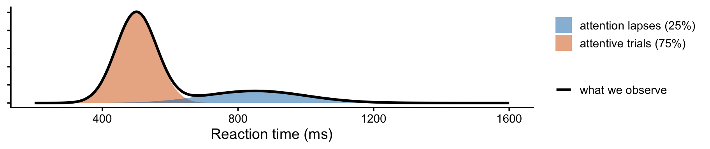
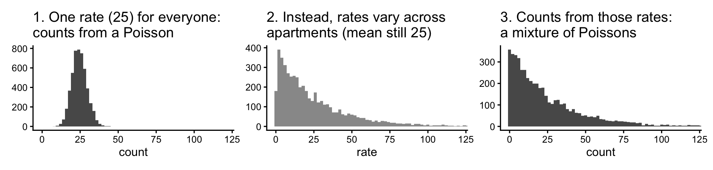
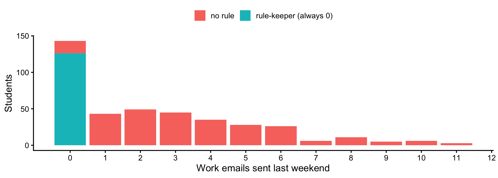
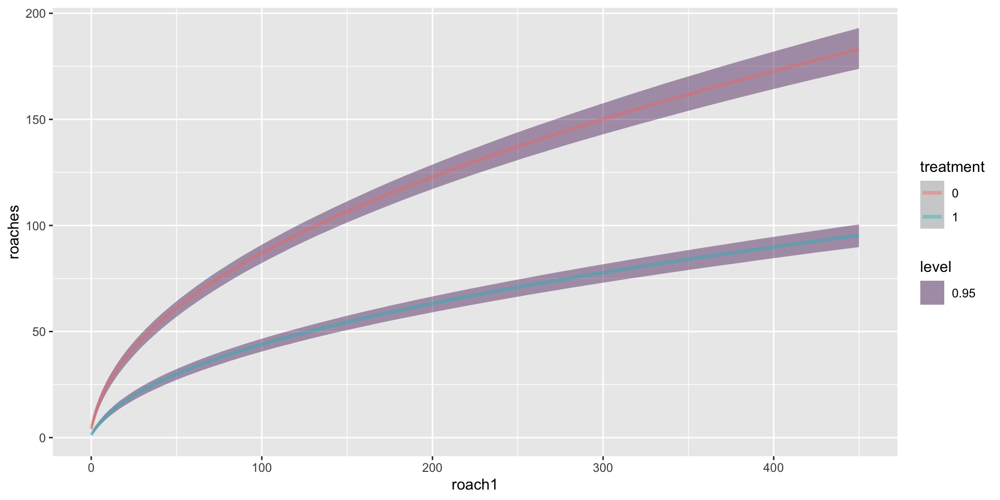
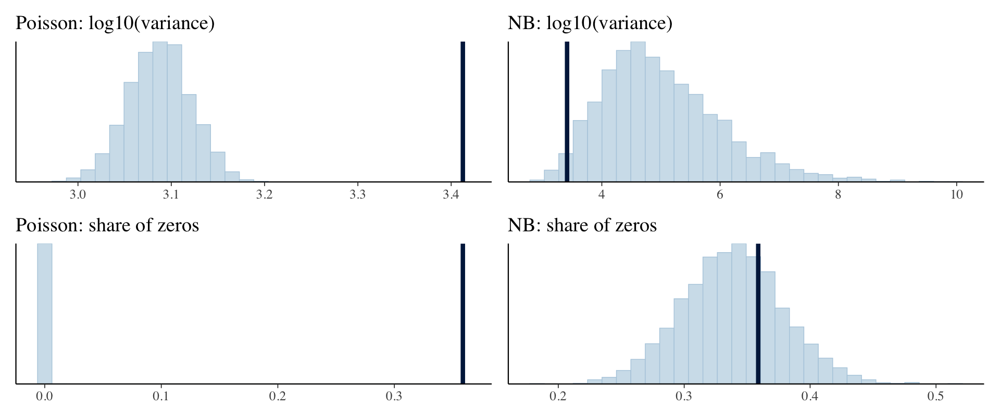
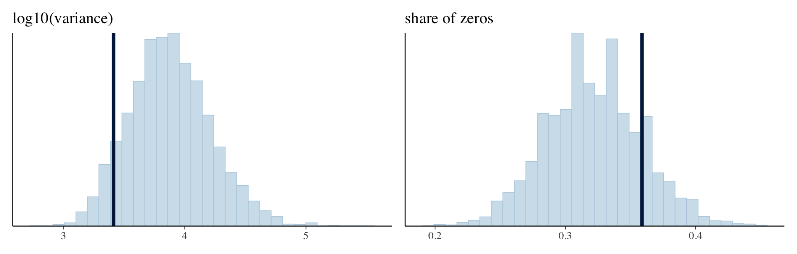
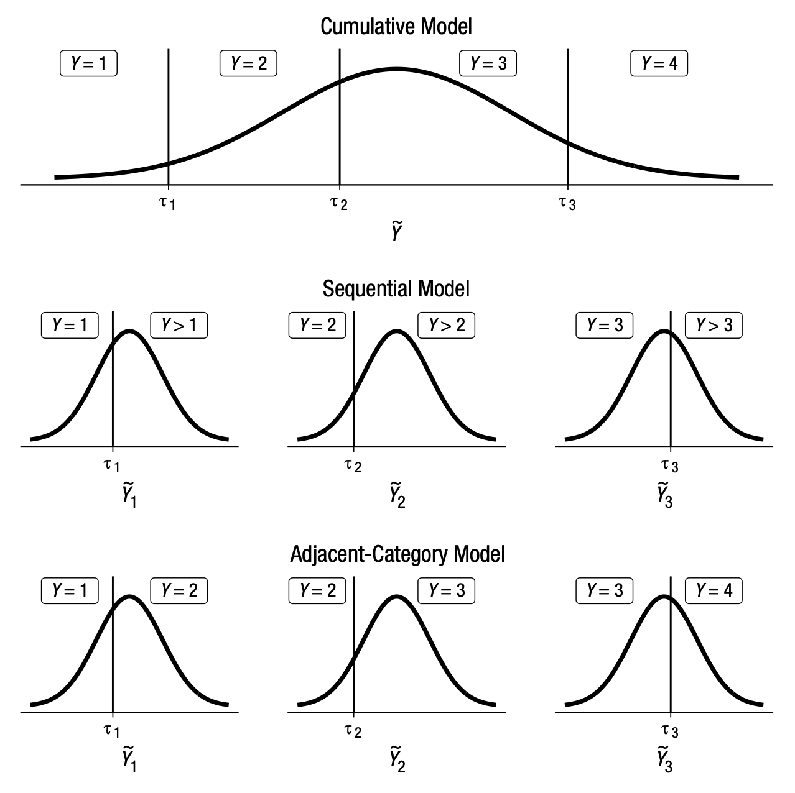

Builds on last time: likelihoods, links, and moving between the link and response scales
The Poisson
The default likelihood for counts (0, 1, 2, …) with no fixed upper limit: roaches caught, emails sent, panic attacks per week.
One parameter, λ: the expected count. Its variance equals its mean, so once you know the mean you know the spread (like the Bernoulli last week: no σ).
Log link: \(\log(\lambda_i)\) = the linear model, so predictions stay positive and coefficients are changes in the log count.
Roach example
y: number of roaches caught
roach1: pretreatment number of roaches
treatment: 1 = pest-control treatment, 0 = control
senior: 1 = building restricted to elderly residents
exposure2: number of days the traps were out (relative to the standard period)
The roach data
Code
roach <-read_csv("roaches.csv") # also at https://josh-jackson.github.io/bayes27/roaches.csvroach
This is an offset: a term with its coefficient fixed at 1. Because of the log link, the offset is the log of exposure, offset(log(exposure2)), and the other coefficients are now about the rate per unit of exposure.
The roach counts have mean 25.6 but variance 2585. A Poisson insists they’re equal.
The posterior predictive checks show it: the Poisson’s simulated data are far too bunched up, and it predicts almost no zeros (the data have 36%).
This is called overdispersion, and it is the rule for count data in psychology, not the exception. People differ in ways the predictors don’t capture.
The fix: let each apartment have its own rate.
What’s a mixture?
A mixture model says the data come from combining two or more distributions: each observation comes from one of them, but we only see the combined data. Example: reaction times, where most trials are attentive (fast, consistent) and some are lapses (slow, spread out).
Code
rt <-tibble(x =seq(200, 1600, by =5)) %>%mutate(attentive = .75*dnorm(x, 500, 60), # 75% of trialslapses = .25*dnorm(x, 850, 150), # 25% of trialsobserved = attentive + lapses)ggplot(rt, aes(x)) +geom_area(aes(y = attentive, fill ="attentive trials (75%)"), alpha = .5) +geom_area(aes(y = lapses, fill ="attention lapses (25%)"), alpha = .5) +geom_line(aes(y = observed, colour ="what we observe"), linewidth =1.2) +scale_fill_manual(values =c("#0072B2", "#D55E00")) +scale_colour_manual(values ="black") +labs(x ="Reaction time (ms)", y =NULL, fill =NULL, colour =NULL) +theme_classic(base_size =14) +theme(axis.text.y =element_blank(), legend.position ="right")

Discrete mixture: a few component distributions (here 2). Zero-inflated models, later today.
Continuous mixture: every case has its own value of a parameter, so infinitely many components. The negative binomial (next).
Counts as a mixture
The Poisson gives every apartment with the same predictors the same rate. But apartments differ in ways we didn’t measure (clutter, neighbors, building age), so each really has its own rate.
Code
set.seed(8)rates <-rgamma(5000, shape =1, rate =1/25) # each apartment's own rate, mean 25p_a <-ggplot(tibble(y =rpois(5000, 25)), aes(y)) +geom_histogram(binwidth =2) +labs(title ="1. One rate (25) for everyone:\ncounts from a Poisson", x ="count", y =NULL)p_b <-ggplot(tibble(rate = rates), aes(rate)) +geom_histogram(binwidth =2, fill ="grey60") +labs(title ="2. Instead, rates vary across\napartments (mean still 25)", x ="rate", y =NULL)p_c <-ggplot(tibble(y =rpois(5000, rates)), aes(y)) +geom_histogram(binwidth =2) +labs(title ="3. Counts from those rates:\na mixture of Poissons", x ="count", y =NULL)(p_a | p_b | p_c) &coord_cartesian(xlim =c(0, 120)) &theme_classic(base_size =12)

Same average count, but far more spread and far more zeros (panel 3 vs. panel 1): what the roach data look like.
If the rates in panel 2 follow a gamma distribution, panel 3 is a negative binomial.
Negative binomial / Gamma Poisson
Used for count data where the variance exceeds the mean, known as overdispersion. Often for the number of failures before a specified number of successes in Bernoulli trials
\[Y \sim \textrm{NB}(\mu,\phi)\]
Gamma-Poisson
The Poisson distribution has just one parameter, so its variance must equal its mean. The negative binomial distribution relaxes this assumption and estimates the shape (\(\phi\)) of a gamma distribution (also an exponential family distribution) to describe the Poisson rates across cases.
The gamma distribution is a non-negative, continuous, two-parameter probability distribution.
Left: two steps (draw each apartment’s rate, then its count). Right: one step. Why are they the same?
We never see any apartment’s rate \(\theta_i\), so average the Poisson over every rate it could have, weighted by how common that rate is under the gamma: \[\Pr(y) = \int \textrm{Poisson}(y \mid \theta)\; \textrm{Gamma}(\theta \mid \phi, \phi/\mu)\; d\theta\]
That integral can be done in closed form, and the formula that comes out is the negative binomial. So brms never draws the rates: it uses the NB formula directly.
\(\mu\) is the mean count; \(\phi\) (brms: shape) is the gamma’s shape. \(\text{Var}(Y) = \mu + \mu^2/\phi\): the \(\mu\) is ordinary Poisson noise, the \(\mu^2/\phi\) is extra variance because apartments differ. As \(\phi \to \infty\) they stop differing and it becomes a Poisson.
Seeing it
Do the two steps by simulation, then lay the one-step NB formula (dnbinom()) on top:
Same distribution. (R’s dnbinom() calls φ size; brms calls it shape.)
How much do apartments differ?
The NB’s extra parameter, the shape φ, sets how spread out the apartments’ rates are (the gamma in panel 2 of “Counts as a mixture”). Both columns have the same mean, 25 roaches:
Small φ: apartments differ a lot, so counts are very spread out, with many zeros. Large φ: rates bunch near 25, and the counts look like a plain Poisson.
Who decides the shape?
The top row is gamma distributions: how the apartments’ rates are spread out. The bottom row is the counts each produces.
We don’t choose φ. The model estimates it from the data, like any other parameter. It shows up as shape in the brms summary, and we give it a prior.
How can it tell, if we never see any apartment’s rate? From how spread out the counts are. An NB’s variance is \(\mu + \mu^2/\phi\): if the counts vary far more than their mean, φ must be small. We never estimate each apartment’s rate; the NB likelihood averages over all of them.
For the roaches φ comes out small (about 0.3): apartments differ enormously.
The observed mean is 25.6. The NB’s average prediction is far higher because a few apartments with 300+ pretreatment roaches get enormous predicted counts (more on that in the checks below).
Treatment effects compared
The treatment effect (on the count scale) from each model, for a household with average pretreatment roaches:
avg_comparisons(model, variables = "treatment"): compute the treatment effect for every row of the real data, then average. This is the average marginal effect (AME).
comparisons(model, variables = "treatment", newdata = "mean"): set the other predictors to their means, then compute the effect once. This is the marginal effect at the mean (MEM).
In a Gaussian model without interactions they’re the same. With a nonlinear link they differ, because the effect on the count scale depends on where you start. AME is the usual default in economics, political science and epidemiology; emmeans-style output is closer to MEM.
Use when there are different causes for the same observation. These are discrete mixtures (see “What’s a mixture?”): two data-generating processes at once, one that makes only zeros and one that makes counts.
Lots of ways to get a zero count: the process never started, or it started and happened to produce nothing. The data can’t tell you which for any one case.
A story: weekend emails
We survey 400 psych grad students: How many work emails did you send last weekend?
Some students keep a strict no-weekend-email rule. They always send 0. The rule gets more common with seniority (year 1–6): you learn.
Everyone else sends a Poisson number of emails. Seniority raises that too (more projects, more co-authors), and so does a deadline next week.
So a 0 is either a rule-keeper, or a rule-breaker who happened to send nothing.
Code
set.seed(2027)n <-400emails <-tibble(year =sample(1:6, n, replace =TRUE), # year in the programdeadline =rbinom(n, 1, .3)) %>%# deadline next week?mutate(year_c = year -3.5,rule =rbinom(n, 1, plogis(-1+0.5* year_c)), # keeps the no-email rule?lambda =exp(1+0.15* year_c +0.8* deadline), # expected emails, if no ruleemails =if_else(rule ==1, 0L, rpois(n, lambda)))
The weekend-email data
Code
emails %>%mutate(who =if_else(rule ==1, "rule-keeper (always 0)", "no rule")) %>%ggplot(aes(x = emails, fill = who)) +geom_bar() +scale_x_continuous(breaks =0:12) +labs(x ="Work emails sent last weekend", y ="Students", fill =NULL) +theme_classic(base_size =14) +theme(legend.position ="top")

36% zeros, but only 32% of students keep the rule. In real data you’d see only the total, not the colors.
ZIP: zero-inflated Poisson
p = the probability a student keeps the rule. Rule-keepers send no emails. Everyone else sends a Poisson(λ) number, which can also be 0.
Two linear models, one for each process, each with its own link. They don’t need the same predictors: deadline matters for how many emails, not for whether you keep a rule.
Family: zero_inflated_poisson
Links: mu = log
Formula: emails ~ 1
Data: emails (Number of observations: 400)
Draws: 4 chains, each with iter = 2000; warmup = 1000; thin = 1;
total post-warmup draws = 4000
Regression Coefficients:
Estimate Est.Error l-95% CI u-95% CI Rhat Bulk_ESS Tail_ESS
Intercept 1.31 0.03 1.25 1.38 1.00 2819 2812
Further Distributional Parameters:
Estimate Est.Error l-95% CI u-95% CI Rhat Bulk_ESS Tail_ESS
zi 0.34 0.02 0.29 0.39 1.00 3190 2597
Draws were sampled using sample(hmc). For each parameter, Bulk_ESS
and Tail_ESS are effective sample size measures, and Rhat is the potential
scale reduction factor on split chains (at convergence, Rhat = 1).
With no predictors for zi, brms estimates it directly as a probability: 0.34 of students are estimated to be rule-keepers (in the simulation, 0.32).
The count part uses a log link: λ = exp(1.31) ≈ 3.7 emails for students without the rule.
Predictors for both parts
The count part gets year and deadline; the zero part gets year. With predictors, zi uses a logit link, so read its coefficients like a logistic regression.
glm.10<-brm(bf(emails ~1+ year_c + deadline, zi ~1+ year_c),family = zero_inflated_poisson,prior =c(prior(normal(1, 1), class = Intercept),prior(normal(0, 1), class = b),prior(normal(0, 1.5), class = Intercept, dpar = zi),prior(normal(0, 1), class = b, dpar = zi)),iter =2000, warmup =1000, chains =4, cores =4,data = emails,backend ="cmdstanr",file ="glm.10w")
glm.10 summary
summary(glm.10)
Family: zero_inflated_poisson
Links: mu = log; zi = logit
Formula: emails ~ 1 + year_c + deadline
zi ~ 1 + year_c
Data: emails (Number of observations: 400)
Draws: 4 chains, each with iter = 2000; warmup = 1000; thin = 1;
total post-warmup draws = 4000
Regression Coefficients:
Estimate Est.Error l-95% CI u-95% CI Rhat Bulk_ESS Tail_ESS
Intercept 0.95 0.05 0.86 1.05 1.00 3331 2570
zi_Intercept -0.88 0.14 -1.17 -0.61 1.00 3982 3229
year_c 0.10 0.02 0.06 0.14 1.00 4438 3086
deadline 0.88 0.07 0.75 1.01 1.00 3980 3245
zi_year_c 0.48 0.09 0.31 0.65 1.00 4112 3461
Draws were sampled using sample(hmc). For each parameter, Bulk_ESS
and Tail_ESS are effective sample size measures, and Rhat is the potential
scale reduction factor on split chains (at convergence, Rhat = 1).
Seniority raises the odds of keeping the rule (zi_year_c), and raises the email count among those who don’t (year_c).
Deadlines only matter for the count.
Close to the truth, though not exact: one sample of 400 students won’t land on every value (year_c is a bit low).
Plotting both parts
Code
yr <-labs(x ="Year in program (centered)")(plot_predictions(glm.10, condition ="year_c", dpar ="zi") + yr +labs(y ="Pr(keeps the rule)")) +(plot_predictions(glm.10, condition ="year_c", dpar ="mu") + yr +labs(y ="Emails, if no rule")) +(plot_predictions(glm.10, condition ="year_c") + yr +labs(y ="Expected emails, everyone")) &theme_classic(base_size =13)
Senior students are more likely to keep the rule (left), but the ones who don’t send more (middle).
The two mostly cancel: expected emails stay about flat through the middle of the program and dip only for the most senior students (right).
A plain Poisson sees only something like the right panel. Its year coefficient is -0.06: “seniority doesn’t matter.” The mixture shows it matters twice, in opposite directions.
Hurdle models
Also a mixture (two-part) model, with a different story: every zero comes from one process (a gate: does anything happen at all?), and once you’re past the gate, a count process that can’t produce 0 (a truncated Poisson).
Zero-inflated: two kinds of zeros (rule-keepers, and rule-breakers who sent nothing).
Hurdle: one kind of zero (didn’t get over the hurdle); positive counts only for those who did.
Family: hurdle_poisson
Links: mu = log
Formula: emails ~ 1
Data: emails (Number of observations: 400)
Draws: 4 chains, each with iter = 2000; warmup = 1000; thin = 1;
total post-warmup draws = 4000
Regression Coefficients:
Estimate Est.Error l-95% CI u-95% CI Rhat Bulk_ESS Tail_ESS
Intercept 1.31 0.03 1.25 1.38 1.00 3958 2888
Further Distributional Parameters:
Estimate Est.Error l-95% CI u-95% CI Rhat Bulk_ESS Tail_ESS
hu 0.36 0.02 0.31 0.41 1.00 3163 2360
Draws were sampled using sample(hmc). For each parameter, Bulk_ESS
and Tail_ESS are effective sample size measures, and Rhat is the potential
scale reduction factor on split chains (at convergence, Rhat = 1).
hu = 0.36 is simply the share of all zeros (0.36 in the data): in a hurdle model every zero comes from the gate. Compare zi = 0.34 in the ZIP, which is only the rule-keepers.
Hurdle model with predictors
glm.11x <-brm(bf(emails ~1+ year_c + deadline, hu ~1+ year_c + deadline),family = hurdle_poisson,prior =c(prior(normal(1, 1), class = Intercept),prior(normal(0, 1), class = b),prior(normal(0, 1.5), class = Intercept, dpar = hu),prior(normal(0, 1), class = b, dpar = hu)),iter =2000, warmup =1000, chains =4, cores =4,data = emails,backend ="cmdstanr",file ="glm.11xw")
glm.11x summary
summary(glm.11x)
Family: hurdle_poisson
Links: mu = log; hu = logit
Formula: emails ~ 1 + year_c + deadline
hu ~ 1 + year_c + deadline
Data: emails (Number of observations: 400)
Draws: 4 chains, each with iter = 2000; warmup = 1000; thin = 1;
total post-warmup draws = 4000
Regression Coefficients:
Estimate Est.Error l-95% CI u-95% CI Rhat Bulk_ESS Tail_ESS
Intercept 0.96 0.05 0.85 1.05 1.00 4527 2889
hu_Intercept -0.64 0.13 -0.89 -0.39 1.00 5259 3011
year_c 0.10 0.02 0.05 0.14 1.00 5643 2937
deadline 0.88 0.07 0.75 1.01 1.00 5106 2967
hu_year_c 0.34 0.07 0.21 0.47 1.00 5666 3161
hu_deadline 0.06 0.23 -0.37 0.50 1.00 5757 2980
Draws were sampled using sample(hmc). For each parameter, Bulk_ESS
and Tail_ESS are effective sample size measures, and Rhat is the potential
scale reduction factor on split chains (at convergence, Rhat = 1).
The count part matches the ZIP’s. The gate (hu) is about any zero, so its year effect (0.34) is smaller than the ZIP’s rule effect (0.48): it mixes rule-keepers with rule-breakers who sent nothing.
Expected emails from the hurdle model
Code
plot_predictions(glm.11x, condition =c("year_c", "deadline")) +labs(x ="Year in program (centered)", y ="Expected emails", colour ="deadline", fill ="deadline") +theme_classic(base_size =14)
The plain Poisson loses badly: it can’t make the zeros.
ZIP vs. hurdle is close. Both fit the counts; they differ in their story about the zeros. Choose by theory: are some people never going to do it (zero-inflated), or does everyone face the same gate (hurdle)?
And check: pp_check(glm.10, type = "bars") should match the spike at 0.
Revisit roaches
Code
glm.8c <-brm(family = zero_inflated_poisson, y ~0+ Intercept + roach1 + treatment +offset(log(exposure2)),prior =c(prior(normal(2, 1), class = b, coef ="Intercept"),prior(normal(0, .5), class = b),prior(beta(1, 1), class = zi)),iter =2000, warmup =1000, cores =4, chains =4,init =0, # random inits up to ±2 make exp(b * 450 roaches) explodesave_pars =save_pars(all =TRUE),data = roach,file ="glm.8c2",backend ="cmdstanr")
glm.8c summary
summary(glm.8c)
Family: zero_inflated_poisson
Links: mu = log
Formula: y ~ 0 + Intercept + roach1 + treatment + offset(log(exposure2))
Data: roach (Number of observations: 262)
Draws: 4 chains, each with iter = 2000; warmup = 1000; thin = 1;
total post-warmup draws = 4000
Regression Coefficients:
Estimate Est.Error l-95% CI u-95% CI Rhat Bulk_ESS Tail_ESS
Intercept 3.44 0.02 3.40 3.48 1.00 1373 1651
roach1 0.01 0.00 0.01 0.01 1.00 2931 2876
treatment -0.49 0.02 -0.54 -0.44 1.00 1302 1911
Further Distributional Parameters:
Estimate Est.Error l-95% CI u-95% CI Rhat Bulk_ESS Tail_ESS
zi 0.36 0.03 0.30 0.42 1.00 1928 1864
Draws were sampled using sample(hmc). For each parameter, Bulk_ESS
and Tail_ESS are effective sample size measures, and Rhat is the potential
scale reduction factor on split chains (at convergence, Rhat = 1).
predictions(glm.8e,newdata =datagrid(roach1 =seq(from =min(roach$roach1), to =max(roach$roach1)), treatment = unique)) %>%get_draws() %>%mutate(treatment =as.factor(treatment)) %>%ggplot(aes(x = roach1, y = draw, color = treatment)) +stat_lineribbon(.width = .95, alpha = .4) +ylab("roaches")

Compare roach models
To compare fairly, all three need the same offset. glm.8b2 is glm.8b plus offset(log(exposure2)):
Code
glm.8b2 <-brm(family = negbinomial, y ~0+ Intercept + roach1 + treatment +offset(log(exposure2)),prior =c(prior(normal(2, 1), class = b, coef ="Intercept"),prior(normal(0, .5), class = b),prior(exponential(1), class = shape)),iter =2000, warmup =1000, cores =4, chains =4,save_pars =save_pars(all =TRUE),data = roach,file ="glm.8b2",backend ="cmdstanr")
# add_criterion() stores the result in the model's file, so it's only computed onceglm.7o <-add_criterion(glm.7o, "loo", moment_match =TRUE)glm.8b2 <-add_criterion(glm.8b2, "loo", moment_match =TRUE)glm.8e <-add_criterion(glm.8e, "loo", moment_match =TRUE)loo_compare(glm.7o, glm.8b2, glm.8e)
model elpd_diff se_diff p_worse diag_diff diag_elpd
glm.8b2 0.0 0.0 NA
glm.8e -3284.5 572.5 1.00
glm.7o -5442.6 705.6 1.00
Checking count models: rootograms
A rootogram compares observed and predicted counts at each value. Bars hanging from the curve that don’t reach 0 = the model’s frequencies are off.
Code
(pp_check(glm.7o, type ="rootogram", ndraws =100) +coord_cartesian(xlim =c(0, 60)) +ggtitle("Poisson")) /(pp_check(glm.8b2, type ="rootogram", ndraws =100) +coord_cartesian(xlim =c(0, 60)) +ggtitle("Negative binomial"))
Checking count models: variance and zeros
Does the model reproduce the data’s variance and its number of zeros? type = "stat" compares one statistic of the data (dark line) to the same statistic in each simulated dataset.
Code
prop_zero <-function(y) mean(y ==0)log10_var <-function(y) log10(var(y))(pp_check(glm.7o, type ="stat", stat ="log10_var") +ggtitle("Poisson: log10(variance)")) +(pp_check(glm.8b2, type ="stat", stat ="log10_var") +ggtitle("NB: log10(variance)")) +(pp_check(glm.7o, type ="stat", stat ="prop_zero") +ggtitle("Poisson: share of zeros")) +(pp_check(glm.8b2, type ="stat", stat ="prop_zero") +ggtitle("NB: share of zeros")) +plot_layout(ncol =2, guides ="collect") &theme(legend.position ="none")

What the checks say
Poisson: simulated variances are about half the real one, and it predicts essentially no zeros (the data have 36%).
NB: gets the zeros right (about 34%), but overshoots the variance, sometimes by orders of magnitude: some simulated datasets contain counts in the thousands (the real maximum is 357).
Why? roach1 enters on the log scale raw, so apartments with 300+ pretreatment roaches get enormous predicted means. glm.8e logged roach1 but also switched to a ZIP, which loses badly. What about the NB with a logged roach1? Next.
A model can win LOO and still fail a check. Do both.
A better NB: log(roach1)
The NB, with the offset, and with log(roach1 + 1) in place of raw roach1:
model elpd_diff se_diff p_worse diag_diff diag_elpd
glm.8h 0.0 0.0 NA
glm.8b2 -20.4 10.8 0.97
glm.8e -3304.9 567.5 1.00
Checking the new NB
Code
(pp_check(glm.8h, type ="stat", stat ="log10_var") +ggtitle("log10(variance)")) +(pp_check(glm.8h, type ="stat", stat ="prop_zero") +ggtitle("share of zeros")) &theme(legend.position ="none")
Code
yrep_8h <-posterior_predict(glm.8h)

Wins LOO, and the variance is now in the right neighborhood (simulated variances about 2.8 times the data’s, instead of orders of magnitude). Zeros: 32% vs. 36% in the data.
Better, not perfect: some simulated datasets still have counts in the hundreds above the real maximum. Real data rarely fit perfectly; the checks tell you where to keep an eye out.
Rate ratios
With a log link, exp() of a coefficient is a rate ratio: the multiplicative change in the expected count. As with odds ratios, exponentiate the draws:
Estimate Est.Error l-95% CI u-95% CI
shape 0.31 0.05 0.24 0.43
zi 0.07 0.05 0.00 0.19
The ZINB says only about 7% of apartments are “structural zeros” (interval nearly touching 0), and it predicts no better than the plain NB.
The NB’s extra variance already produces plenty of zeros. Zero-inflation was needed for the Poisson, not for the counts.
The hurdle NB does worse here: it says every zero comes from the zero process, so it can’t use roach1 and treatment to explain the zeros the same way.
Lesson: try the NB first, check the zeros with pp_check(type = "stat"), and add a zero model only if it is still missing them (or if you have a theory of where the zeros come from).
Ordinal regression models
likert scales never, sometimes, often no degree, hs degree, some college, college degree
discrete, defined order, distance between categories is unknown
common assumption is to treat differences as the same and model it as continuous with a Gaussian
The trolley data
From Statistical Rethinking: 9930 ratings from 331 people, each rating 30 trolley-problem scenarios.
response: how morally permissible the action in the story is, 1 (forbidden) to 7 (permissible).
Three story features (0/1): action (the person acts rather than lets something happen), intention (the harm is a means to the goal, not a side effect), contact (the person physically touches the victim).
The cumulative probability of a value is the probability of that value or any smaller value. In the context of ordered categories, the cumulative probability of 3 is the sum of the probabilities of 3, 2, and 1
Probability of each response
Logic:
Probability of any observation is just counting up the cumulative proportion for values to the left of the cut points.
Thus option 1 refers to all values up to the first. Option two is values to the left of cut point 2 and to the right of cut point 1.
We will discuss in terms of the probability of x being less than or equal to some cut point.
Thus what is the probability of getting a 5? It is the cumulative probability of getting a 5 or less subtracting the cumulative probability of getting a 4 or less.
Cumulative log odds
We can change this into cumulative log odds, where each response value is represented as a logit.
This changes the x axis, making different cut points that represent the cumulative log odds of getting a 4, for example.
The cumulative log odds of a 7 (or less) is infinite, because Pr(y ≤ 7) = 1. A logit of 0 means 50% of responses are at or below that cut point; −2 means about 12%; +2 means about 88%.
Why logits? Because we want to predict an ordered outcome.
Each point is one cut point: the cumulative proportion, and (label) its log cumulative odds.
Cut points as intercepts
We will have intercepts for each response option, each on the log-cumulative-odds scale. Run through the inverse logit, they are the cumulative probability of each outcome.
\(\alpha_k\) is an “intercept” unique to each possible outcome value k. We are estimating the probability of some response \(y_i\) being equal to or less than some category. E.g., the cumulative probability of getting a 5? It is the proportion of values that are 5 or less.
Where \(\phi\) is a stand-in for regression terms. Right now it is an intercept-only model. The \(\alpha_k\) are the cut points: one fewer than the number of categories (6 for a 1–7 scale).
Fitting it in brms
SR calls this an ordered logit; brms calls it family = cumulative (with a logit link by default). Same model.
Why is the linear model ϕ subtracted from each intercept? Because if we decrease the log-cumulative-odds of every outcome value k below the maximum, this necessarily shifts probability mass upwards towards higher outcome values. This way, a positive β value indicates that an increase in the predictor variable x results in an increase in the average response.
# The model only uses action, contact and intention, so the 9,930 rows are just 12# distinct combinations. Averaging over those, weighted by how often each occurs,# gives exactly the same answer as averaging over every row, and is ~800x faster.cells <- trolley %>%count(action, contact, intention)avg_comparisons(glm.13, newdata = cells, wts ="n")
disc is 1 / SD of the latent scale, on a log link. Negative coefficients (e.g., disc_contact:intention) mean more spread in ratings for those stories: people disagree more.
Predicted response distributions with unequal variances
Do you want to assume similar effects of your predictors across the range of your DV? Or does the effect occur only as certain differences between the categories?
For example, predicting educational attainment. Negative peer influences may have a large effect at graduating HS but little effect compared to whether or not someone goes to graduate school.
brm(Y ~cs(X), family = sratio) # cs() works with sratio, cratio and acat, not cumulative
Sequential and Adjacent category models
For many ordinal variables, the assumption of a single underlying continuous variable, as in cumulative models, may not be appropriate.
sequential: years of marriage where the marriage may continue or end by divorce, but the latter can happen only if it did not happen before. For every category k there is a latent continuous variable.
Adjacent category (partial credit): Sequential models model the decision between Y = k and Y > k, whereas adjacent-category models model the decision between Y = k and Y = k + 1. Mathematically convenient, but its thresholds need not be in order.
Adjacent category models

Ordinal predictors
Say you have an exercise variable: (none, 1 time a month, 1 time a week, multiple times a week, everyday). How do you model? Continuous?
Can’t you just model ordinal predictors as a series of dummy variables? But what if we want to respect the inherent order?
Monotonic effects, mo(x) in brms. Think of it as a compromise between continuous and dummy. We do not assume categories are equidistant with respect to their effect on the response variable (because then we would be using continuous). Instead, the distance between adjacent predictor categories (or integers) is estimated from the data and may vary across categories.
Monotonic effects: education
Does education change how permissible people find the trolley actions? Education has 8 ordered levels, from elementary school to a graduate degree.
\(\beta_E\) = -0.056 per step, so from lowest to highest education the log-cumulative-odds shift by about -0.39: more education, slightly less permissible ratings. Small next to action or contact.
How the change is spread across steps is very uncertain: only 60 and 120 ratings come from the two lowest levels, so their δs are mostly prior.